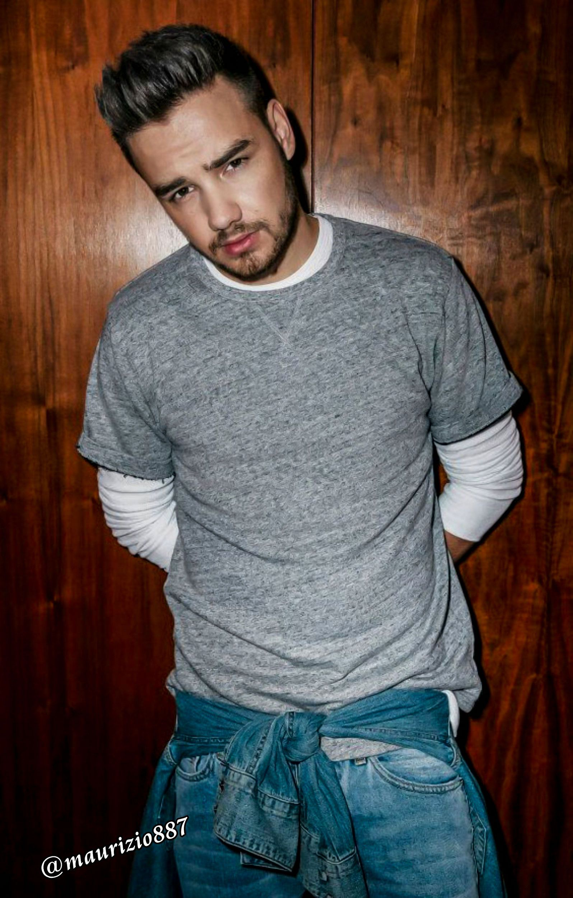
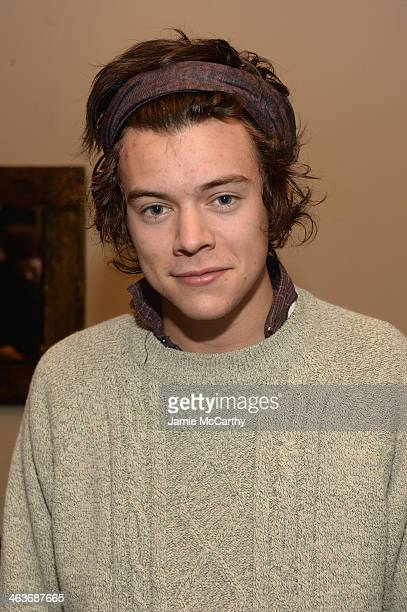

História
Em 2010, Harry Styles, Liam Payne, Louis Tomlinson, Niall Horan e Zayn Malik fizeram o teste como candidatos solo para a sétima temporada do reality show musical The X Factor. Todos eles não conseguiram se classificar na categoria "garotos" para continuar na competição, porém, os juízes Nicole Scherzinger e Simon Cowell tiveram uma sugestão de eles formarem um grupo (boyband),sendo assim, foram classificados na categoria "grupos". Posteriormente, o grupo se reuniu por duas semanas para se conhecerem melhor e trabalhar juntos. Sobre o nome, quem teve a ideia de chamar o grupo de "One Direction" foi Cowell e Harry Styles.
A primeira apresentação do grupo, foi uma versão acústica de "Torn", da cantora Natalie Imbruglia, em várias apresentações o grupo cantou músicas de Elton John, Bonnie Tyler, The Beatles, Snow Patrol, Kelly Clarkson, Rihanna, entre outros, assim levando-o rapidamente a ganhar popularidade no Reino Unido. One Direction terminou em terceiro lugar, atrás apenas de Rebecca Ferguson e Matt Cardle, respectivamente. Imediatamente, após a final da competição, sua canção "Forever Young", que teria sido liberada se eles tivessem ganhado o The X Factor, vazou na internet.
Membros
Louis William Tomlinson, nascido em Doncaster, Inglaterra, a 24 de dezembro de 1991 (31 anos), é filho de Johannah e Troy Austin, se separaram quando ele ainda era bem pequeno, sua mãe casou-se com Mark que tem sido sua figura paterna desde então. Louis tem seis irmãs mais novas, Charlotte, Felicite, Georgia (filha de seu pai com outra mulher), as gêmeas Daisy e Phoebe, e Doris, que é gêmea de Ernest, seu unico irmao.Seus pais, Johanna e Mark, se separaram em 2011. Ele estudou na Hall Cross School, onde atuou em diversas produções, e na Hayfield School. Suas irmãs Daisy e Phoebe tinham papéis em uma série infantil chamada Fat Friends e Louis as acompanhava para servir de extra. Mais tarde, frequentou uma escola de atuação em Barnsley. Ele atuou em um filme de drama do ITV, chamado If I Had You e teve um pequeno papel em Waterloo Road.Em 2010, ele fez uma audição solo na sétima edição do programa The X Factor, cantando "Hey There Delilah" logo após o Simon pedir para que ele mudasse a música enquanto cantava "Elvis Ain't Dead". Louis foi eliminado da categoria "garotos" e colocado na banda junto com os outros membros.
Liam James Payne, nascido em Wolverhampton, Inglaterra, a 29 de agosto de 1993 (29 anos), é filho de Karen e Geoff. Tem duas irmãs mais velhas, Ruth e Nicola.Até os quatro anos de idade, Liam passou por acompanhamento médico e fez diversos testes regulares, pois foi detectado problemas disfuncionais num dos rins. Liam sofreu bullying na escola, o que o levou a frequentar aulas de boxe, comentando: "Eu tinha que aprender a defender-me, e aos doze anos, lutava contra o treinador de 38 anos. Eu quebrei meu nariz, tive meu tímpano perfurado e chegava a casa com o rosto machucado e inchado. Mas isso deu-me confiança. Eu saí-me muito melhor nos anos seguintes". Ele estudou tecnologia na música na City of Wolverhampton College e, além de cantar, toca piano e guitarra. A primeira audição de Liam para o The X Factor foi feita na quinta temporada, aos quatorze anos, quando Simon Cowell achou que ele não estava pronto para a competição e lhe pediu para voltar em dois anos. Ele retornou na sétima temporada e cantou "Cry Me a River" uma canção popular, recebendo aplausos de pé da plateia e de Cowell. No campo de treinamento, ele cantou "Stop Crying Your Heart Out" antes de ser eliminado na categoria garotos e ter se juntado ao grupo da One Direction. Payne cita Justin Timberlake como sua primeira e maior influência.
Niall James Horan, nascido em Mullingar, Irlanda, em 13 de setembro de 1993 (29 anos), é filho de Maura Gallagher e Bobby Horan, e irmão de Greg Horan. Seus pais se divorciaram quando tinha cinco anos. Greg e ele viveram entre a casa dos dois por alguns anos e finalmente, quando jovens, decidiram morar com o pai em Mullingar. Niall foi um aluno do Coláiste Mhuire, Coláiste Mhuire e da Congregation de Christian Brothers.Durante um período, ele esteve no coral de sua escola, participando sazonalmente de uma canção natalina. Antes de sua participação no The X Factor, ele executou diversas performances em sua terra natal, inclusive como um ato de apoio a Lloyd Daniels em Dublin. Horan toca guitarra desde sua infância.
Harry Edward Styles,nascido em Cheshire, Inglaterra, a 1 de fevereiro de 1994,é filho de Anne e Des, e tem uma irmã mais velha, Gemma.Harry tinha sete anos quando seus pais se separaram. Ele estudou na Holmes Chapel Comprehensive School. Antes de participar do The X Factor, ele foi o vocalista de uma banda chamada White Eskimo, que tinha Haydn Morris como guitarrista, Nick Clough como baixista e Will Sweeny como baterista. Harry citou Elvis Presley como uma de suas influências.Ele fez sua audição para o X Factor com "Isn't She Lovely?" de Stevie Wonder, e recebeu comentários positivos de dois dos três jurados, com Louis Walsh tendo dúvidas se ele estaria preparado para avançar na competição. No campo de treinamento, ele cantou "Stop Crying Your Heart Out" da banda Oasis. Harry foi eliminado da categoria "garotos" e, após isso, foi colocado na banda por Simon Cowell, junto com os outros membros.

Essa primeira versão bizarra até foi batizada em homenagem ao seu criador: seriam os Dandroids.
Surge um novo mascote
A ideia de ter um mascote foi amadurecendo e a missão foi passada para uma profissional da área. A ilustradora Russa Irina Blok, também funcionária do Google, ficou com a missão de representar o pequeno robô de uma maneira mais agradável.

A ideia principal da Irina era representar tudo graficamente com poucos traços e de forma mais chapada. O desenho também deveria gerar identificação rápida com quem o olha. Surgiu então o Bugdroid, o novo mascote do Android.

A principal inspiração para os traços do novo Bugdroid veio daqueles bonequinhos que ilustram portas de banheiro para indicar o gênero de cada porta. Conta a lenda que a artista estava criando em sua mesa no escritório do Google e olhou para o lado dos banheiros e a identificação foi imediata: simples, limpo, objetivo.
Então é isso! Espero que você tenha gostado do nosso artigo com essa curiosidade sobre o sistema Android e seu simpático mascote.